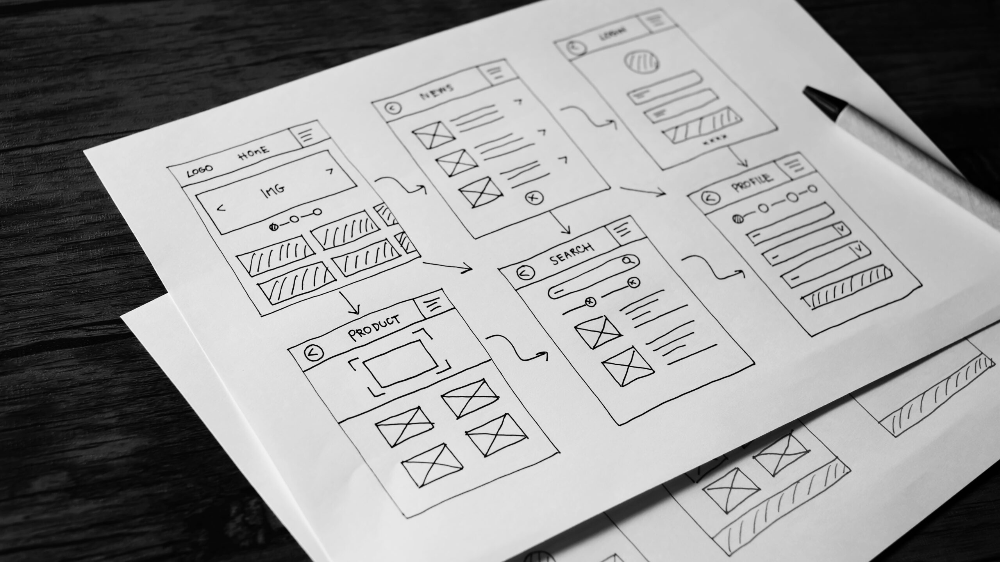
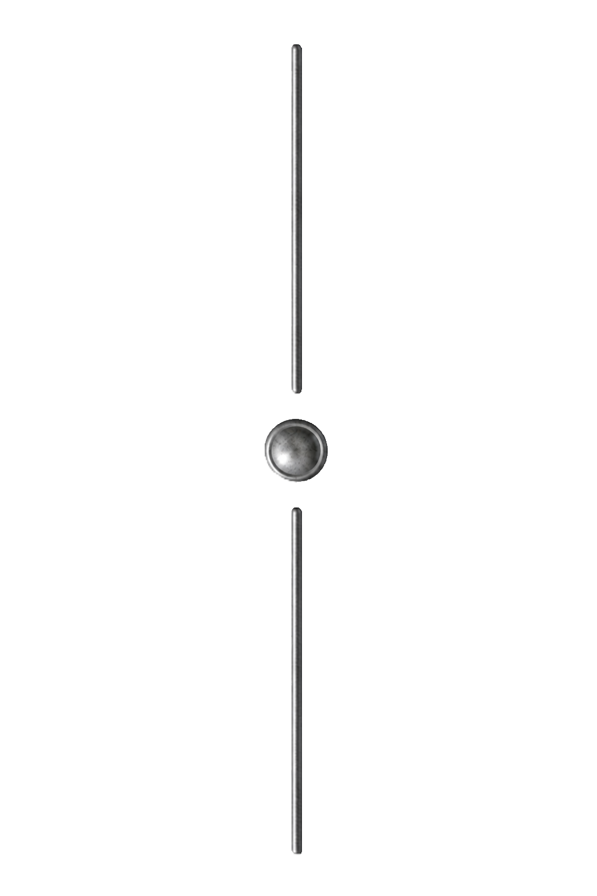
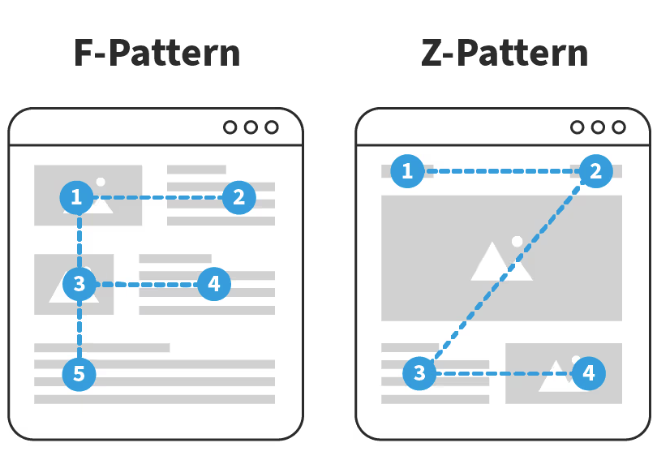
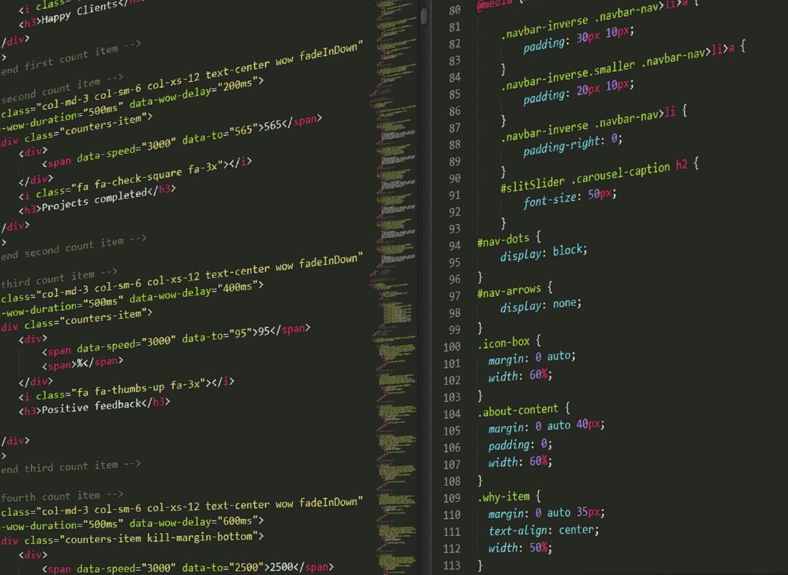

Featured Post

From Wireframe to Website: My Development Workflow
Explore the process of turning an initial visual layout into a fully functioning website. This post covers how I start with a structured wireframe to help build the HTML foundation, before applying CSS for styling and visual design.
Read More
Latest Posts

Designing for Structure: How Layout Hierarchy Improves User Experience

Creating Consistent Design with CSS
Optimising User Experience Through Performance and Simplicity